중립 유닛 등장·개체 수·재등장 규칙 · 19종
등장·보충은 목표 기획이며, 딱정벌레 굴의 초기 수·증식·상한은 현행 규칙이다.
- 지형·물가·둥지 보호 조건을 따르며, 딱정벌레 외 일반종은 첫 결원부터 주기마다 1마리씩 정원까지 보충한다.
- 일반종 보충은 플레이어 시야 밖의 유효한 빈자리에서 진행하며, 자리가 없으면 보류한다.
- 조건·게임 시간은 월드 공유이며, 어느 부족이 충족해도 적용하고 유니크는 보장 시각까지 각 1마리 등장한다.
- 유니크는 사망 시 재등장하지 않으며, 최초 등장 전 거점이 사라지면 같은 지형 조건의 다른 후보지로 예약을 옮긴다.
- 숨기·퇴각·순회 복귀와 저장·불러오기는 체력·등장 여부·사망 기록·보충 대기 시간을 유지한다.
| 유닛 | 등장 조건 | 개체 수 | 재등장 규칙 |
|---|
늪·서식 위험·자원 분포는 기획 초안이며 게임에는 아직 적용되지 않았다.
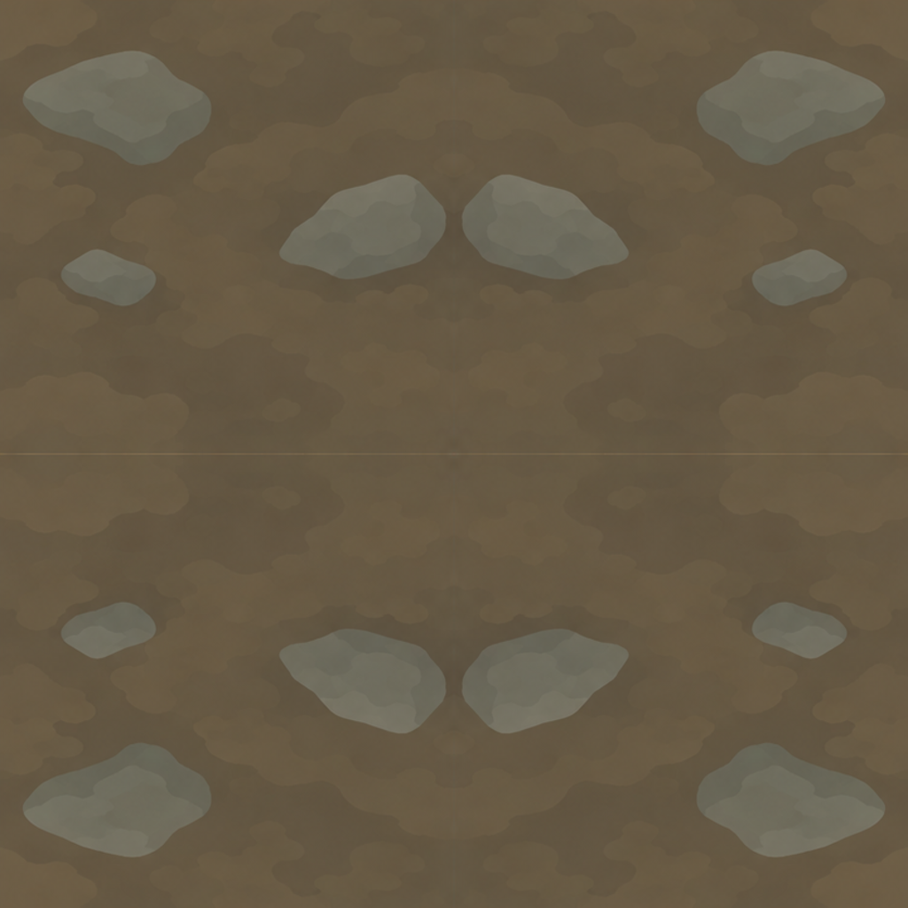
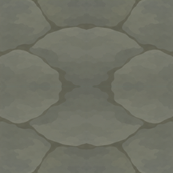
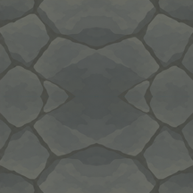
| 기본 이미지 | 대기 | 이동 | 점프 | 채집 | 운반 | 투척 | 오른쪽 공격 | 왼쪽 공격 | 피격 | 탄생 | 사망 | |
|---|---|---|---|---|---|---|---|---|---|---|---|---|
| 새싹콩 | 기본 이미지 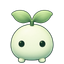 |
대기 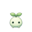 |
이동 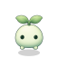 |
점프 |
채집 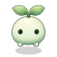 |
운반 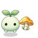 |
투척 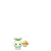 |
오른쪽 공격 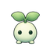 |
왼쪽 공격 |
피격 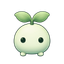 |
탄생 |
사망 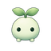 |
| 포자버섯 | 기본 이미지 |
대기 |
이동 |
점프 |
채집 |
운반 |
투척 |
오른쪽 공격 |
왼쪽 공격 |
피격 |
탄생 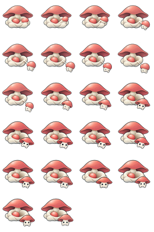 |
사망 |
| 몽돌 | 기본 이미지 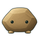 |
대기 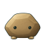 |
이동 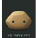 |
점프 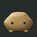 |
채집 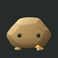 |
운반 |
투척 |
오른쪽 공격 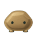 |
왼쪽 공격 |
피격 |
탄생 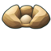 |
사망 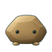 |
| 샘방울 | 기본 이미지 |
대기 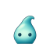 |
이동 |
점프 |
채집 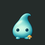 |
운반 |
투척 |
오른쪽 공격 |
왼쪽 공격 |
피격 |
탄생 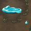 |
사망 |
| 가시등 딱정벌레 | 기본 이미지 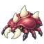 |
대기 |
이동 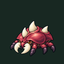 |
점프 | 채집 | 운반 | 투척 | 오른쪽 공격 |
왼쪽 공격 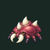 |
피격 |
탄생 | 사망 |
| 꽃꼬리새 | 기본 이미지 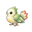 |
대기 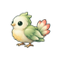 |
이동 | 점프 | 채집 | 운반 | 투척 | 오른쪽 공격 | 왼쪽 공격 | 피격 | 탄생 | 사망 |
| 이슬토끼 | 기본 이미지 |
대기 |
이동 | 점프 | 채집 | 운반 | 투척 | 오른쪽 공격 | 왼쪽 공격 | 피격 | 탄생 | 사망 |
| 흙두더지 | 기본 이미지 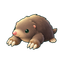 |
대기 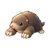 |
이동 | 점프 | 채집 | 운반 | 투척 | 오른쪽 공격 | 왼쪽 공격 | 피격 | 탄생 | 사망 |
| 보따리달팽이 | 기본 이미지 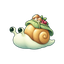 |
대기 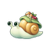 |
이동 | 점프 | 채집 | 운반 | 투척 | 오른쪽 공격 | 왼쪽 공격 | 피격 | 탄생 | 사망 |
| 솜양 | 기본 이미지 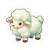 |
대기 | 이동 | 점프 | 채집 | 운반 | 투척 | 오른쪽 공격 | 왼쪽 공격 | 피격 | 탄생 | 사망 |
| 굴림도토리 | 기본 이미지 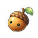 |
대기 | 이동 | 점프 | 채집 | 운반 | 투척 | 오른쪽 공격 | 왼쪽 공격 | 피격 | 탄생 | 사망 |
| 흙멧돼지 | 기본 이미지 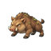 |
대기 | 이동 | 점프 | 채집 | 운반 | 투척 | 오른쪽 공격 | 왼쪽 공격 | 피격 | 탄생 | 사망 |
| 방울두꺼비 | 기본 이미지 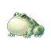 |
대기 | 이동 | 점프 | 채집 | 운반 | 투척 | 오른쪽 공격 | 왼쪽 공격 | 피격 | 탄생 | 사망 |
| 넝쿨거북 | 기본 이미지 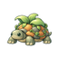 |
대기 | 이동 | 점프 | 채집 | 운반 | 투척 | 오른쪽 공격 | 왼쪽 공격 | 피격 | 탄생 | 사망 |
| 그늘족제비 | 기본 이미지 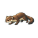 |
대기 | 이동 | 점프 | 채집 | 운반 | 투척 | 오른쪽 공격 | 왼쪽 공격 | 피격 | 탄생 | 사망 |
| 올가미덩굴 | 기본 이미지 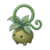 |
대기 | 이동 | 점프 | 채집 | 운반 | 투척 | 오른쪽 공격 | 왼쪽 공격 | 피격 | 탄생 | 사망 |
| 갈퀴부엉이 | 기본 이미지 |
대기 |
이동 | 점프 | 채집 | 운반 | 투척 | 오른쪽 공격 | 왼쪽 공격 | 피격 | 탄생 | 사망 |
| 봄지기 | 기본 이미지 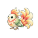 |
대기 | 이동 | 점프 | 채집 | 운반 | 투척 | 오른쪽 공격 | 왼쪽 공격 | 피격 | 탄생 | 사망 |
| 등불지기 | 기본 이미지 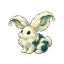 |
대기 | 이동 | 점프 | 채집 | 운반 | 투척 | 오른쪽 공격 | 왼쪽 공격 | 피격 | 탄생 | 사망 |
| 오래된 등짐 | 기본 이미지 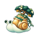 |
대기 | 이동 | 점프 | 채집 | 운반 | 투척 | 오른쪽 공격 | 왼쪽 공격 | 피격 | 탄생 | 사망 |
| 걸어가는 숲 | 기본 이미지 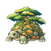 |
대기 | 이동 | 점프 | 채집 | 운반 | 투척 | 오른쪽 공격 | 왼쪽 공격 | 피격 | 탄생 | 사망 |
| 흰발 | 기본 이미지 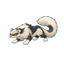 |
대기 | 이동 | 점프 | 채집 | 운반 | 투척 | 오른쪽 공격 | 왼쪽 공격 | 피격 | 탄생 | 사망 |
| 가시등 우두머리 | 기본 이미지 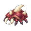 |
대기 | 이동 | 점프 | 채집 | 운반 | 투척 | 오른쪽 공격 | 왼쪽 공격 | 피격 | 탄생 | 사망 |
먹이는 재생하지 않으며, 둥지 근처에 시작 유닛 2마리의 이동·채집·운반 약 5분치를 둔다.
| 자원 | 원화 | 운반물 | 채집애니 |
|---|---|---|---|
| 비옥토 | 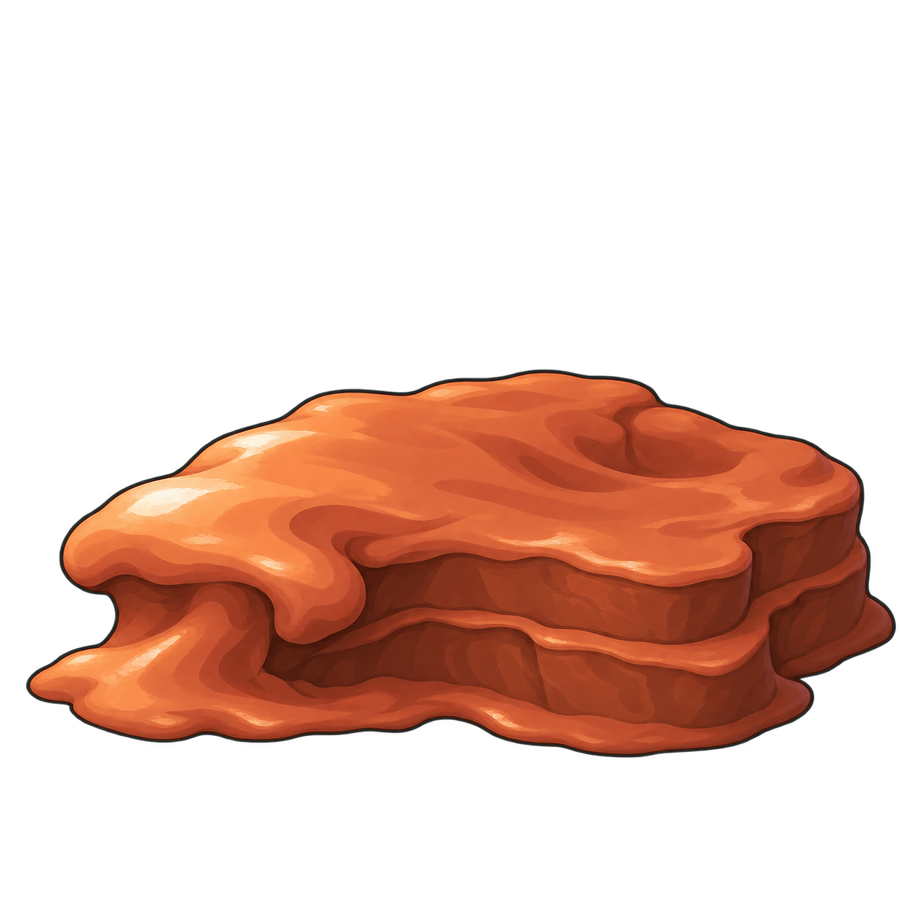 | 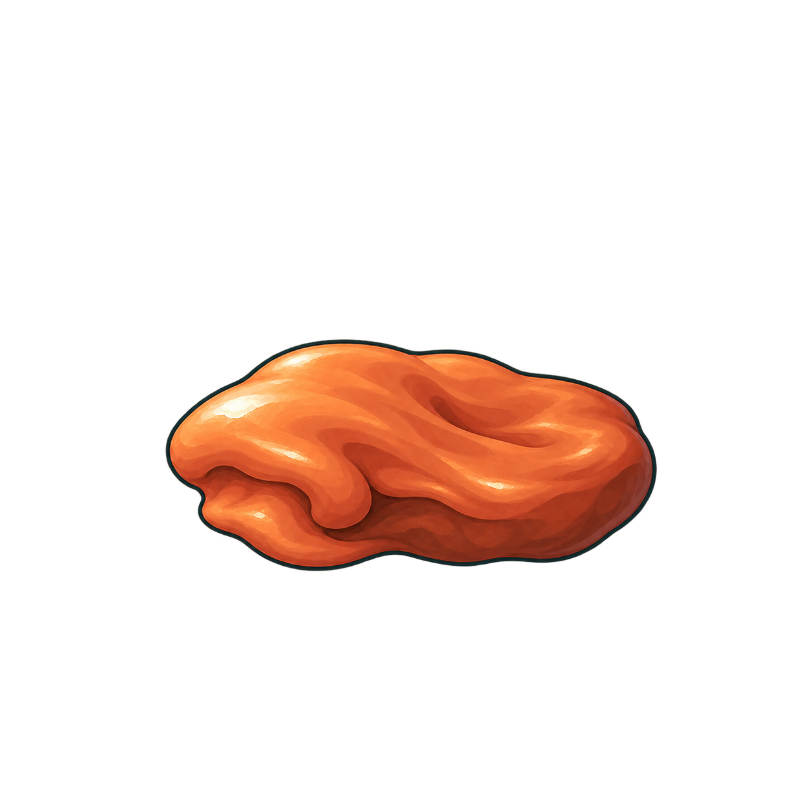 | 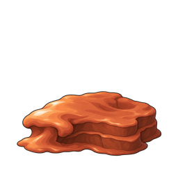 |
| 목재 | 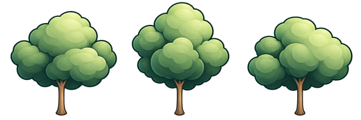 | ||
| 자갈 | |||
| 이슬방울 | |||
| 고기 | |||
| 갑각 | |||
| 풀섬유 | |||
| 모래 | |||
| 철광석 | |||
| 구리광석 | |||
| 수정 | |||
| 버섯 |  |


아트
아트 스타일
밝은 연두·아이보리와 부드러운 명암의 식물형 일러스트.
유닛
가시등 딱정벌레 원화

이전 가시등 딱정벌레 원화
배경음악
평화 10곡·전투 긴장 4곡을 상태별로 순환하며, 곡 사이에는 3초 쉰다.
상태 전환은 2초 크로스페이드하며, 교전 종료 5초 후 평화로 돌아간다.
효과음
버튼·개체 선택 최초 발견
콩 착지 보행 샘방울 착지 보행 몽돌 탄생·구르기
버섯 투척 둥지 수령
씨앗 발아 · 방출 파열 등장 샘방울 탄생 포자버섯 탄생
저장된 아트 프롬프트
고해상도 가시등 딱정벌레
Use case: style-transfer. Asset type: one final static 2D game creature sprite, transparent RGBA background. Image 1 is the identity and pose reference (the maroon spiny-back beetle). Image 2 is the accepted game art STYLE reference (smooth cream/sage fantasy flower nest). Redraw ONLY the beetle from image 1 as a polished smooth hand-painted fantasy illustration matching image 2's clean curved fine dark-teal contours, flowing shaded surfaces, soft luminous gradients, and restrained painted highlights. Preserve its compact low oval maroon carapace, three prominent ivory back spikes, two large inward curved ivory mandibles, tiny amber eyes, six short segmented burgundy legs, and facing left in a front three-quarter view. Keep the same recognizable silhouette, approximate proportions and ground orientation as image 1. The creature is an enemy, keep muted burgundy shell and ivory spikes so it remains distinct from the sage plant units. No extra plant leaves or flower parts on the beetle. Entire creature centered with all legs/spikes included and generous transparent margin. No floor, no cast background, no scenery, no text, no frame, no watermark. Render smooth anti-aliased contours and continuous brush shading, not pixel art, not retro, no pixelated edge stairs, no dithering, no coarse block patterns. High resolution production artwork. One static illustration only, no animation frames or sprite sheet.
고해상도 꿀버섯 군집
Use case: stylized-concept. Asset type: production static transparent 2D strategy game food sprite, one mushroom cluster. Reference image 1 is the new in-game nest and is the style authority. Reference image 2 is the old mushroom cluster and is the identity/composition reference only. Redraw this golden honey-mushroom cluster from scratch as a smooth, high-resolution hand-painted botanical fantasy game illustration that belongs to the same world as the reference nest. Preserve a large umbrella cap behind and two smaller umbrella mushrooms lower left and lower right, warm honey-gold wavy caps with a few creamy golden patches, visible beige gills, thick ivory stems, sparse rounded sage-green moss/leaves at the feet. Three mushrooms total, compact triangular cluster. Soft warm upper-left light, smooth rounded gradients and fine dark deep-teal/olive contours with anti-aliased edges, charming calm storybook rendering. Keep broad simple highlights and limited organic detail like the nest, no speckled noise. Mild three-quarter top view, centered, full silhouette visible, compact near-square framing with 7% clear padding. True transparent alpha background. No soil disc, no ground tile, no broad cast shadow. No pixel art, no pixel grid, no blocky stair-step edges, no low-res texture, no dithering, no text, no labels, no watermark. This is a single static source illustration, not an animation sheet or preview.
고해상도 꿀버섯 한 개
Use case: stylized-concept. Asset type: production static transparent 2D strategy game single honey-mushroom food sprite. Reference image 1 is the smooth illustrated in-game nest, the style authority. Reference image 2 is the approved new smooth honey-mushroom cluster, the exact mushroom species/style reference. Create one separate small honey-gold mushroom in precisely the same hand-painted style as the right-hand little mushroom in reference 2, not a cluster. One warm honey-gold rounded wavy umbrella cap, a few simple creamy golden cap highlights, clear beige gills, one thick ivory stem with a tiny softly scalloped collar, and only two small simple sage-green leaves touching its base. Smooth rounded gradients and slender deep-teal/olive contours, clean anti-aliased edges. Compact broad silhouette, wider cap and short thick stem, mild three-quarter top view, gently leaning organic form. Soft warm upper-left light. Complete isolated single mushroom centered with 8% clear padding in square canvas. Genuine transparent alpha, no ground disc, no broad shadow, no accompanying mushrooms, no face, no text, no watermark. Absolutely no pixel art, no stair-step/blocky edges, no grid, no dithering, no low-res texture. Single static source illustration only, not animation sheet or preview.
고해상도 열매 · 참고 원화
Use case: stylized-concept. Asset type: production static transparent 2D strategy game berry bush food sprite. Reference image 1 is the new in-game nest and is the style authority. Reference image 2 is the old berry bush and is the identity/composition reference only. Redraw from scratch as a smooth high-resolution hand-painted botanical fantasy game illustration belonging exactly to the same art family as the nest. Preserve three vivid raspberry-red clustered berries arranged in a triangle with one upper center, one lower left, one lower right, each composed of a few softly rounded juicy lobes, held by compact sage/olive-green broad leaves and small stems. Broad simple cream highlights, soft rounded gradients, fine dark deep-teal/olive contours with clean anti-aliased edges. Limited organic detail, no noise. Soft warm upper-left light, mild three-quarter top view, full compact near-square silhouette centered with 7% clear padding. Genuine transparent alpha background. No pot, no ground tile, no soil disc, no cast shadow. No pixel art, no blocky edges, no visible grid, no dithering, no text, no labels, no watermark. Single static source illustration only, not animation frames or a preview.
고해상도 영양 방울 · 참고 원화
Use case: stylized-concept. Asset type: production static transparent 2D strategy game carried food/nutrient sprite. Reference image 1 is the new in-game nest and is the style authority. Reference image 2 is the old carried golden nutrient and is identity reference only. Redraw this single small rounded honey-gold nutrient droplet from scratch as a smooth high-resolution hand-painted botanical fantasy game illustration matching the warm golden center of the nest. Preserve the simple upright teardrop/seed silhouette: rounded broad base, gently tapering point at top, asymmetrically warm ivory-gold left upper highlight, warm amber shaded right edge, slender dark deep-teal/olive outer outline. Softly painted gradients, smooth anti-aliased contour, tangible gentle rounded volume, no internal texture, no leaves, no face. Full silhouette centered with 8% clear padding, true transparent alpha background. No ground tile, no drop shadow, no text, no labels, no watermark. Absolutely no pixel art, no blocky stair edges, no dithering. One static source illustration, not animation sheet or preview.
고해상도 둥지 Lv.1
Use case: style-transfer. Asset type: production high-resolution 2D game sprite, one isolated botanical flower nest, true transparent background. Reference image is ONLY the shape/species and color guide for STAGE 1. Repaint it completely as a polished smooth hand-painted fantasy game illustration, at 2048 x 2048 quality with clean anti-aliased curves and rich softly blended shading. Absolutely NO pixel art, NO stepped/blocky contours, NO visible low-resolution pixel clusters, NO dithering, NO chunky square shading, NO nearest-neighbor look. The user explicitly dislikes pixel-art games. Preserve the same humble beginning nest: exactly two broad cupped ivory-to-pale-sage petals protecting a tiny warm golden three-lobed seed chamber and a little two-leaf green sprout, with two small basal leaves. Faceless, no eyes, no limbs, no characters. Same slightly elevated front view, symmetrical compact silhouette, friendly quiet organic style, deep green-teal fine outlines rather than thick black strokes, matte ivory petals with smooth light-green reflected shading, restrained warm gold center. Large simple beautiful surfaces, readable at game size, not noisy. Exactly one complete object centered and filling most of a square canvas with about 8 percent empty transparent margin on all sides. No ground tile or soil, no scenery, no text, no labels, no grid or checkerboard, no cast shadow outside the object. This is the actual replacement source artwork; it will be shown large in-game. Render high-resolution continuous curves and fine clean edges, NOT a magnified small sprite.
고해상도 둥지 Lv.2
Use case: style-transfer. Asset type: final high-resolution 2D fantasy game sprite on genuine transparent alpha. Image 1 is the EXACT accepted smooth painting style and botanical species; image 2 is ONLY the old object's shape/progression reference. Completely repaint image 2 to match image 1. Crisp clean anti-aliased continuous curves, softly blended hand-painted ivory and sage-green shading, fine dark green-teal outlines, restrained warm gold interior. The user explicitly hates pixel-art games: absolutely NO pixel art, NO pixel clusters, NO square/blocky highlights, NO stepped edges, NO dithering, NO low-resolution texture. Aim for 2048x2048-quality production artwork, NOT a magnified small sprite. Same slightly elevated frontal game viewpoint, calm symmetrical composition, large simple readable organic forms. One complete isolated object centered, filling most of a square canvas with 8 percent transparent margin all around. No text, labels, grids, checkerboard, scenery, characters, faces, eyes or limbs, no external shadow. Subject: STAGE 2 young flower nest, one evolutionary step above image 1. Preserve the four broad enclosing ivory/sage petals, modest pointed rear petal crown, two compact curling green side stems, golden recessed seed chamber with the tiny green two-leaf sprout, and a low two-layer basal leaf rosette from image 2. It must look young and compact, simpler than an ornate mature nest. No ground tile, no soil.
고해상도 둥지 Lv.3
Use case: style-transfer. Asset type: final high-resolution 2D fantasy game sprite on genuine transparent alpha. Image 1 is the EXACT accepted smooth painting style and botanical species; image 2 is ONLY the old object's shape/progression reference. Completely repaint image 2 to match image 1. Crisp clean anti-aliased continuous curves, softly blended hand-painted ivory and sage-green shading, fine dark green-teal outlines, restrained warm gold interior. The user explicitly hates pixel-art games: absolutely NO pixel art, NO pixel clusters, NO square/blocky highlights, NO stepped edges, NO dithering, NO low-resolution texture. Aim for 2048x2048-quality production artwork, NOT a magnified small sprite. Same slightly elevated frontal game viewpoint, calm symmetrical composition, large simple readable organic forms. One complete isolated object centered, filling most of a square canvas with 8 percent transparent margin all around. No text, labels, grids, checkerboard, scenery, characters, faces, eyes or limbs, no external shadow. Subject: STAGE 3 mature flower nest from image 2. Preserve the broad layered ivory petals, taller rear crown, elegant paired green curling side vines, low sage leaf rosette and central warm gold three-lobed seed chamber with a tiny two-leaf sprout. Same silhouette and recognizable petal arrangement, rendered entirely in the smooth polished painting of image 1. Richer and fuller than a young nest, with no side satellite buds. No ground tile, no soil.
고해상도 둥지 Lv.4
Use case: style-transfer. Asset type: final high-resolution 2D fantasy game sprite on genuine transparent alpha. Image 1 is the EXACT accepted smooth painting style and botanical species; image 2 is ONLY the old object's shape/progression reference. Completely repaint image 2 to match image 1. Crisp clean anti-aliased continuous curves, softly blended hand-painted ivory and sage-green shading, fine dark green-teal outlines, restrained warm gold interior. The user explicitly hates pixel-art games: absolutely NO pixel art, NO pixel clusters, NO square/blocky highlights, NO stepped edges, NO dithering, NO low-resolution texture. Aim for 2048x2048-quality production artwork, NOT a magnified small sprite. Same slightly elevated frontal game viewpoint, calm symmetrical composition, large simple readable organic forms. One complete isolated object centered, filling most of a square canvas with 8 percent transparent margin all around. No text, labels, grids, checkerboard, scenery, characters, faces, eyes or limbs, no external shadow. Subject: STAGE 4 advanced flower colony from image 2, the strongest version of this same species. Preserve the dominant large central ivory flower nest with layered crown and protected warm golden sprout chamber; exactly one smaller closed ivory-green bud on EACH side, linked by broad intertwined sage leaves and roots. Keep all three flower structures a compact unified sprite. Same recognizable silhouette, no added towers or new structures, smooth organic curved petals and delicate painted highlights rather than blocky pixels. No ground tile, no soil.
고해상도 둥지 바닥
Use case: style-transfer. Asset type: final high-resolution 2D fantasy game sprite on genuine transparent alpha. Image 1 is the EXACT accepted smooth painting style and botanical species; image 2 is ONLY the old object's shape/progression reference. Completely repaint image 2 to match image 1. Crisp clean anti-aliased continuous curves, softly blended hand-painted ivory and sage-green shading, fine dark green-teal outlines, restrained warm gold interior. The user explicitly hates pixel-art games: absolutely NO pixel art, NO pixel clusters, NO square/blocky highlights, NO stepped edges, NO dithering, NO low-resolution texture. Aim for 2048x2048-quality production artwork, NOT a magnified small sprite. Same slightly elevated frontal game viewpoint, calm symmetrical composition, large simple readable organic forms. One complete isolated object centered, filling most of a square canvas with 8 percent transparent margin all around. No text, labels, grids, checkerboard, scenery, characters, faces, eyes or limbs, no external shadow. Subject: ONLY the botanical GROUND BED from image 2, to sit under the smooth flower nest in image 1. No flower nest in the output. A broad quiet muted warm-brown soil clearing, nearly square with rounded cut corners, bordered sparsely by large pale sage leaves and a few simple broad roots. Preserve the existing footprint and leave the central soil unobstructed. Smooth soft earth shading in two or three broad regions, no noisy speckles or fine clutter; outer leaves use the same creamy sage highlights, softly blended green shadows and fine curved dark-teal outlines as image 1. Do not render the soil as pixel patches, jagged color bands, polygon facets or a coarse texture. No grid, no tiny clover, no pebbles, no dense moss. A beautiful clean quiet foundation that lets the central flower be the focus.
둥지 바닥
Use case: precise-object-edit. Asset type: final standalone 2D game nest ground sprite on true alpha transparency. Image 1 is the OLD GROUND to replace; Image 2 is the FLOWER NEST and the exact authoritative art style. Redraw the ground from scratch so it belongs under that flower. Preserve the old ground's centered, nearly square rounded botanical footprint and transparent cut corners, viewed from the same slightly elevated front / top game camera. Make the drawing MUCH SIMPLER and deliberately coarse: large clean pixel clusters and stepped dark teal outer contours, with the same apparent pixel size and restrained cel shading as the ivory flower petals. Aim for a native roughly 125-by-125-pixel design enlarged by an integer scale, never a finely rendered 500-pixel painting. The center is a broad quiet muted warm brown soil bed in just two or three large shading regions, with very few broad marks. Along the perimeter place only a sparse low border of large sage-green leaves and a few broad simple roots, using pale sage highlights and dark teal shadows that match the flower. Keep the middle flat and unobtrusive so the ivory flower remains the focus. No dense moss, clovers, pebbles, tiny roots, speckles, texture noise, dithering, grass hairs, glossy detail or fine linework. Do not add the flower, characters, buildings, text, labels, grid, checkerboard, scenery, a floor plane or external cast shadow. Exactly one complete isolated reusable ground tile, centered on a square transparent canvas, full footprint visible with a small transparent safety margin. This is actual replacement source art, not a comparison or mockup.
둥지 성장 Lv.1
Use case: precise-object-edit. Asset type: an actual standalone static game nest sprite candidate, not a presentation board or mockup. Input image 1 is the existing mature nest and the exact visual style/species reference. Preserve its charming clean pixel-art rendering, chunky ivory and pale sage green petals, dark teal pixel outlines, limited cel-shaded pixel clusters, warm golden seed chamber, tiny two-leaf sprout motif, and the same slightly elevated front / three-quarter game camera. No face, no eyes, no limbs, no creatures, no typography, no labels, no frame, no scenery, no dirt tile, no external cast shadow, no checkerboard painting. Genuine transparent background. Square canvas, complete object visible with transparent margins. Keep the object bottom-centered on one common ground line. This is a biological living flower nest for a colony strategy game, not architecture. Create STAGE 1, the primitive humble starting nest, distinctly much simpler and smaller than the reference, approximately half the width and half the height of the reference species at equal world scale. Only two broad plain cupped pale-green leaves cradle one small warm golden seed pod with a tiny two-leaf shoot, plus two very small basal leaves. Low squat silhouette, sparse details and very little glow, no ornate vines, no curled tendrils, no layered flower crown, no side flowers. It should look healthy, vulnerable and newly germinated, not damaged or wilted. The biological ancestor of the reference is immediately recognizable, but it is plainly a low-level nest. Pixel art, avoid smooth painterly gradients or photoreal textures. Render exactly one sprite.
둥지 성장 Lv.2
Use case: precise-object-edit. Asset type: an actual standalone static game nest sprite candidate, not a presentation board or mockup. Input image 1 is the existing mature nest and the exact visual style/species reference. Preserve its charming clean pixel-art rendering, chunky ivory and pale sage green petals, dark teal pixel outlines, limited cel-shaded pixel clusters, warm golden seed chamber, tiny two-leaf sprout motif, and the same slightly elevated front / three-quarter game camera. No face, no eyes, no limbs, no creatures, no typography, no labels, no frame, no scenery, no dirt tile, no external cast shadow, no checkerboard painting. Genuine transparent background. Square canvas, complete object visible with transparent margins. Keep the object bottom-centered on one common ground line. This is a biological living flower nest for a colony strategy game, not architecture. Create STAGE 2, a young intermediate nest that plausibly grows into the existing reference at stage 3. It has about 70 percent of the reference width and height at equal world scale. Four simple rounded thick cupped ivory-sage petals enclose the same small golden chamber and two-leaf shoot; a modest two-layer leafy base. The center is partly open and gently golden, the shell has clear large readable shapes. Very restrained plant ornament: at most two short side curling stems; no tall rear crown of petals, no side flowers, no extravagant roots. Visibly richer and stronger than a two-leaf seed cradle, visibly simpler and younger than the elaborate input mature nest. Pixel art, avoid smooth painterly gradients or photoreal textures. Render exactly one sprite.
둥지 성장 Lv.4
Use case: precise-object-edit. Asset type: an actual standalone static game nest sprite candidate, not a presentation board or mockup. Input image 1 is the existing mature nest and the exact visual style/species reference. Preserve its charming clean pixel-art rendering, chunky ivory and pale sage green petals, dark teal pixel outlines, limited cel-shaded pixel clusters, warm golden seed chamber, tiny two-leaf sprout motif, and the same slightly elevated front / three-quarter game camera. No face, no eyes, no limbs, no creatures, no typography, no labels, no frame, no scenery, no dirt tile, no external cast shadow, no checkerboard painting. Genuine transparent background. Square canvas, complete object visible with transparent margins. Keep the object bottom-centered on one common ground line. This is a biological living flower nest for a colony strategy game, not architecture. Create STAGE 4, the advanced colony form one clear evolutionary step beyond the existing input mature nest (stage 3). Preserve the recognizable original mature central flower nest and its protected golden sprout chamber as the dominant centerpiece. Make it a broader, regal living cluster: add one smaller closed ivory-green bud on EACH side connected to the central nest by thick interwoven sage roots, strengthen the layered leaf rosette under all three structures, add a second elegant outer whorl of pale petals behind the main flower. The small side buds should each be only about a quarter of the central nest size. Wider and denser silhouette, only moderately taller, about 115 percent of the reference overall footprint at equal world scale, still one cohesive compact game sprite. Warm center stronger but confined to the central seed chamber; all outer pale petals and roots stay clearly colored and shaded, no huge glow halo. Fewer large readable details, no excessive tendrils, no separate garden, no giant tree, no temple architecture, no excessive spikes. The reference must remain recognizable inside this stronger colony form. Pixel art, avoid smooth painterly gradients or photoreal textures. Render exactly one sprite. Revision: Use case: precise-object-edit. Edit target: this stage-4 pixel-art flower nest colony sprite. Preserve the artwork, flower forms, two small side buds, golden central sprout chamber, exact pixel-art style and pale sage/ivory colors. Correct the framing ONLY: zoom the entire object out slightly to leave a generous 10 percent genuinely transparent margin on all four sides, and fully show the extreme left and right leaf tips and interwoven root ends so no pixel of any plant part is cut by the canvas edge. Recover any missing leaf tips coherently and symmetrically. Entire compact cluster centered, level ground baseline, no new structures, no extra buds, no text, no checkerboard, no painted background. Genuine alpha transparency. This is a finished standalone source sprite candidate, not a comparison sheet.
둥지 레이어 원화
Source parts atlas: Use case: precise-object-edit. Asset type: PRODUCTION layered 2D game sprite parts atlas, NOT an animation preview. Rebuild this faceless flower nest from scratch as clean independent overlapping art layers, matching the reference's ivory petals, pale sage green leaves, warm yellow recessed chamber, dark teal pixel outlines, soft chunky pixel art shading, and top/front three-quarter symmetric view. Output a transparent RGBA sprite parts atlas laid out as exactly 4 columns by 3 rows of equal rectangular cells, ideally 2048 x 1536. No grid lines, no labels, no text, no full assembled sprite. Exactly ONE isolated complete part per cell, centered, generous transparent margin. Every part has a COMPLETE finished contour including its previously hidden broad base/root, no cut edges, no scraps from neighboring petals, no rectangular crop boundaries. These are real source layers for later compositing and animation. Row 1 from left: (1) the entire fixed green leafy foundation/frame of the nest, including lower green leaf rosette and side curling vines, with a large clean transparent opening in the upper middle for inserting petals; NO ivory petals, NO yellow core, NO sprout. (2) warm yellow/golden interior recess, a broad upright rounded diamond or flame-shaped bowl from tip to broad rounded base, subtle golden speckles, completely filled surface with NO other petals and NO sprout; (3) the paired IVORY crown petals forming an inverted V/roof, two attached ivory lobes as one complete crown with broad roots, dark teal outline; (4) the tall IVORY back-left petal with its pointed tip curling gently toward the inner right, complete broad lower root. Row 2 from left: (5) the mirrored IVORY back-right petal; (6) the large IVORY front-left side petal from the reference, curved tall teardrop with tip curling inward/right, complete broad rounded base; (7) mirrored IVORY front-right side petal; (8) the large frontmost central IVORY upward-pointing heart/teardrop petal, broad rounded base, subtle pale green shading. Row 3 from left: (9) small pale GOLD inner-left petal/pod, rounded complete leaf shape with warm cream highlight and golden shadow; (10) mirrored small pale GOLD inner-right pod; (11) small pale GOLD center pod, complete rounded teardrop; (12) the small green two-leaf seedling with a short complete stem. Maintain ONE coherent pixel art style and consistent dark teal outlines across all 12 parts. Each isolated part should be large enough to preserve original pixel art detail. Transparent background everywhere between parts and inside the green foundation opening. No checkerboard painted into pixels. Do not produce sequential animation frames. Do not include any assembled nest examples. Do not include shadows cast outside the parts. Preserve the reference's botanical nest identity, no face, no eyes. Foreground leaf layer: Use case: precise-object-edit. Production source art layer for this flower nest's idle animation, not an animation preview. Draw ONLY the detachable FOREGROUND LOWER GREEN LEAF ROSETTE from the bottom of reference image 1, in the clean chunky pixel art style of reference image 2. It will sit in front of the ivory petals and hide their broad roots. A single symmetric shallow fan/band of 9 overlapping pale sage green leaves, dark teal outer outlines, soft cream-green highlights, darker sage shadow, with the central small heart-shaped leaf pointing downward and small flanking leaves pointing diagonally outward. Preserve the reference botanical style. The fan's silhouette should be broad and shallow, width approximately 3 times its height, lower edge a gentle shallow bowl curve. Each leaf has a COMPLETE pointed/rounded contour including its hidden root, overlapping naturally. Center one entire cohesive connected leaf fan on a true transparent background with generous padding. No ivory petals, no white flower, no golden chamber, no seedling, no upper side vines, no tall curls, no architectural bowl, no pedestal, no floor, no cast shadow, no text, no labels, no grid. Only one finished reusable foreground leaf layer. Keep the dark teal pixel outline clean with no detached noise or scraps.
둥지 잎·꽃잎 보정
Corrected side vines and back petals: Use case: precise-object-edit. Production 2D sprite layer correction for the flower nest in image 1. Image 1 is the DESIGN AUTHORITY: keep its original low rounded crown, broad ivory petals, sage green leafy nest, small warm yellow interior, chunky pixel outlines and gentle botanical shape. Image 2 is the faulty old green frame: its bottom front leaf rosette must NOT be repeated. Create ONE transparent source parts atlas with exactly 2 columns by 2 rows, four clearly separated complete parts, generous transparent gutters, no labels, no assembled examples. Top left: ONLY the LEFT fixed outer green vine/leaf side of the original nest, a vertical curved side branch with a few compact curling tendrils and small side leaves, complete narrow root extending down, no central/front/bottom leaf rosette. Top right: its mirrored RIGHT fixed outer green vine side. Each side branch must end in a modest narrow completed green root that can be covered by a separate foreground leaf layer; do not draw broad front leaves, a lower bowl, a center arch, or a connected bottom row. Bottom left: ONLY the LEFT ivory BACK petal from the upper left of image 1, a broad folded lance-shaped ivory petal with pale sage shading, gently bent short upper tip, broad complete lower root; simple folded tip, NO spiral curl, NO vine, NO extra attached leaves. Bottom right: mirrored RIGHT ivory BACK petal. Use the same dark teal outline weight and soft chunky pixel art rendering as image 1. Keep each part a single coherent complete shape, clean smooth pixel contours, no chopped edges, no detached scraps, no shadows outside silhouettes. Transparent background, no grid strokes, no text, no glow, no yellow parts. These four layers will directly replace the duplicated base and over-curled back petals in production animation; preserve the original reference's calm broad flower design. Hidden backing bed: Production hidden backing layer for the original ivory-and-sage flower nest reference. Draw ONLY one shallow broad dark sage green botanical nest bowl/body, no front leaves, no rosette, no petals, no vines, no sprouts. This is the recessed solid support surface BEHIND the moving flower petals and the existing separate front green leaf rosette; it must fill gaps without duplicating any leaf contours. Shape: a complete broad rounded oval bowl, width about twice its height, slightly scalloped dark teal outer silhouette, softly faceted pixel art shading in muted forest/sage greens, darker at bottom, lighter muted sage at top center. No bright white details and no yellow. Match the dark teal outlines and chunky pixel art density of the original reference. The bowl should read as a quiet continuous shaded botanical bed, not a second row of individual leaves. Single complete isolated sprite layer with generous transparent margin, true transparency, no shadows outside it, no labels or text. This is actual production source art, not a preview.
둥지 대기 애니메이션
Use case: precise-object-edit. Create a production 2D game idle animation SPRITE SHEET from the attached reference sprite. The input is the exact character/prop design to preserve, not a sheet to warp. OUTPUT one square 2048x2048 PNG with TRUE TRANSPARENT background, EXACTLY 4 columns by 4 rows of 512x512 cells, 16 complete separate animation cels, read left to right then top to bottom. No text, no frame numbers, no border, no guides, no checkerboard. Subject: faceless cream-green flower-bud nest, dark green outline, moss-green basal leaves and curled vines, warm golden cradle inside, tiny central seed sprout. Preserve the recognizable reference design, all its major petals, palette, three-quarter overhead view and crisp hand-painted pixel-art rendering. Each cell holds only one complete nest at exactly the same scale, center, viewpoint and planted baseline. Keep lower basal leaves planted and identical in location; at least 12 pixels transparent safety padding all around. Nest bottom at y=475 within every 512 cell. CRITICAL animation is GENUINE REDRAWN CEL ANIMATION. Do not merely shift, rotate, scale, skew or deform one flat image. Individually redraw petal contours, folds, overlap and highlights across frames. Upper/back petals gradually unfurl outward a few degrees, side petals gently separate with a small delay, exposing a little more of the existing gold cradle; central tiny sprout flexes its two leaves independently, then all settle back. Front enclosing petal follows a subtler delayed movement. The plant never becomes a fully open flower, never has a face, never adds objects. Quiet cozy idle, restrained but readable at game size. The 16 cels are one closed 3.2-second loop: cel 1 resting reference pose; cels 2-5 slowly inhale and loosen petal folds; cels 6-9 widest gentle opening; cels 10-13 ease back with sprout leaf follow-through; cels 14-16 settle close to cel 1, with a seamless 16-to-1 transition. Draw true intermediate silhouettes, internal petal edges and changing occlusion rather than identical copies or a row of alternate designs. Every cel remains the same nest; no growth, morphing, new petals, palette flicker, flashes, particles or camera movement. This sheet itself will be sliced and used in the runtime game, not a presentation board.